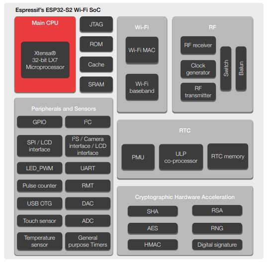
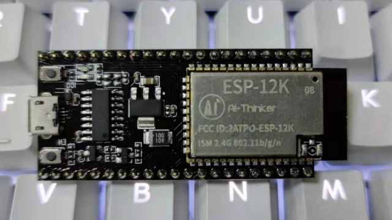

ESP32S2¶
GitHub : Xtensa LX7 240 MHz Wi-Fi USB1.1 OTG ULP Touch DVP DAC QFN56
Xin简介¶
EEMBC : 472.81 CoreMark (240 x 1.97CoreMark/MHz)
规格参数¶
GPIO |
UART |
SPI |
I2C |
I2S |
PWM |
ADC |
DAC |
|||
|---|---|---|---|---|---|---|---|---|---|---|
43 |
2 |
4 |
2 |
1 |
8 |
20ch(12b) |
2ch(8b) |
1.1(OTG) |
150Mbps |
基本信息¶
特征参数¶
240 MHz Xtensa LX7
PicoRV32 ULP 8 KB SRAM
4 Kbit eFuse
1× 16bit DVP, 1× 8bit LCD
2x 13bit SAR ADC
2x 8bit DAC
2× UART
43× GPIO
Warning
ESP32-S2 为单核WiFi MCU， 不支持蓝牙，支持TOF，并且配置有8bit DAC，软件开始增加RainMaker支持
芯片架构¶
电源参数¶
电压范围：2.3 to 3.6 V
功耗范围：
ULP¶
RISC-V PicoRV32 FSM 8KB SRAM 17.5MHz
电源管理单元，五种功耗模式，超低功耗协处理器 (ULP)：
ULP-RISC-V 协处理器
ULP-FSM 协处理器
连接能力¶
Throughput¶
WiFi¶
802.11b/g/n 21dBm 150Mbps HT40
在 2.4 GHz 频带支持 20 MHz 和 40 MHz 频宽，支持 1T1R 模式，数据速率高达 150 Mbps
天线分集
802.11 mc FTM
支持外部功率放大器
USB¶
USB 1.1 OTG <12Mbps
安全特性¶
内置安全硬件，4096 bit OTP，硬件加密加速器可支持 AES-128/256、Hash、RSA、HMAC，RNG
RSA 模块¶
RSA-4096
AES 模块¶
XTS-AES-128 XTS-AES-256
基于 AES-128-XTS 算法的 flash 加密方案，确保应用程序与配置数据在 flash 中保持加密状态。 flash 控制器支持执行加密的应用程序固件，这不仅为存储在 flash 中的敏感数据提供了必要保护，还防止了运行时由于固件更改造成的 TOCTTOU (time-of-check-to-time-of-use) 攻击。
数字签名¶
可以通过固件不可访问的私钥生成数字签名。同样地，其 HMAC 外设也可以生成固件不可访问的加密摘要。 目前，大多数物联网云服务使用基于 X.509 证书的身份验证，数字签名外设保护了定义设备身份的私钥。这样一来，即使出现软件漏洞，它也能为设备身份提供强大的保护
Xin选择¶
品牌对比¶
无线通信¶
UART/SPI/SDIO |
||||||
|---|---|---|---|---|---|---|
613.8 |
320K/128K |
WiFi(150Mbps) |
2/4/0 |
|||
352KB/288KB |
WiFi(72Mbps) |
3/2/1 |
QFN32 |
|||
288KB/2MB |
6/2/1 |
QFN32 |
通用控制¶
MCU USB CAN DAC GPIO=43
USB |
DAC |
SDIO |
|||||
|---|---|---|---|---|---|---|---|
613.8 |
320K/128K |
FS |
8bit |
0 |
|||
288K/20K |
0 |
1 |
QFN56 |
||||
566 |
192K/512K |
HS+FS |
12bit |
1 |
LQFP100 |
||
224K/512K |
FS |
12bit |
2 |
48/64/100 |
型号对比¶
DAC/PWM |
|||||||
|---|---|---|---|---|---|---|---|
613.8 |
320K/128K |
WiFi |
2(8bit)/8 |
1.1OTG+CAN |
|||
994.26 |
520K/448K |
WiFi+BLE |
2(8bit)/18 |
ETH(mac)+CAN |
|||
1181.6 |
512K/384K |
WiFi+BLE |
0/10 |
1.1OTG+CAN |
|||
407.22 |
400K/384K |
WiFi+BLE |
0/6 |
CAN |
Hint
ESP32S2 在 ESP32 基础上移除了蓝牙增加了USB OTG， Xtensa LX7 单核相较 ESP32S3 有保留DAC
版本对比¶

Xin应用¶
开发板¶
开发框架¶
ESP-IDF¶
IDF ≥ v4.2
ESP-IDF 从v4.2版本后开始支持 ESP32S2 ，使用时优选仓库 esp-idf(v4.4) ，集成众多功能组件，由官方提供支持保证，是商业化应用开发最好选择。
Arduino¶
Arduino 提供低门槛开发环境，现已支持Arduino IDE2.0
PlatformIO¶
应用方案¶
USB Camera¶
在乐鑫开源的 esp-iot-solution 有提供相应的USB应用方案，其中的USB Host方案包括：
usb_camera_lcd_display
usb_camera_sd_card
usb_camera_wifi_transfer
usb_cdc_4g_module
USB PD¶
USB PD (USB Power Delivery)功率传输协议，通过USB线缆提供高效的能源传输方式，是当下USB应用非常值得探索的实践。
内置12位ADC可以监控USB TYEP-C接口的CC线，精确测量CC线上的压差，实现USB连接、拔除、传输方向的检测判断。
DAC可输出控制
int main(void)
{
}
Xin总结¶
能力构建¶
问题整理¶
应用总结¶
ESP32S2 的市场定位为MCU，在当下的市场竞争中存在一定的短板，就低端应用的性价比而言，资源和接受度不及 ESP8266